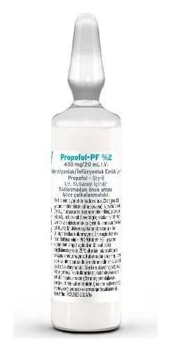

Propofol-Pf %2 400 mg/20 ml I.V. Enjeksiyonluk/İnfüzyonluk Emülsiyon, 5 Adet

Ne için kullanılır
KT · Bölüm 1PROPOFOL-PF %2, kutuda 5 adet 20 mL Tip I renksiz cam ampul içeren ambalajlarda sunulan, beyaz renkli, su içinde yağ emülsiyonudur. PROPOFOL-PF %2 genel anestezikler denilen bir ilaç grubundadır. Genel anestezikler, cerrahi operasyonlar ya da diğer müdahalelerin gerçekleştirilebilmesine olanak sağlamak amacıyla, bilinç kaybı (uyku) oluştururlar. Bu ilaçlar aynı zamanda sakinleştirici olarak (tamamen uykuya dalınmadığı uykululuk hali) da kullanılırlar. PROPOFOL-PF %2; Yetişkinlerde ve 3 yaşından büyük çocuklarda genel anestezinin başlatılması ve idamesinde, Yoğun bakım ünitesinde suni solunum uygulanan 16 yaşından büyük hastalarda sedasyon (sakinleştirmek) sağlaması amacıyla,
Tek başına ya da yerel veya bölgesel anestezi ile kombine olarak yetişkinler ve 3 yaşından büyük çocukların tanısal ve cerrahi işlemler sırasında sedasyon sağlaması amacıyla kullanılır.